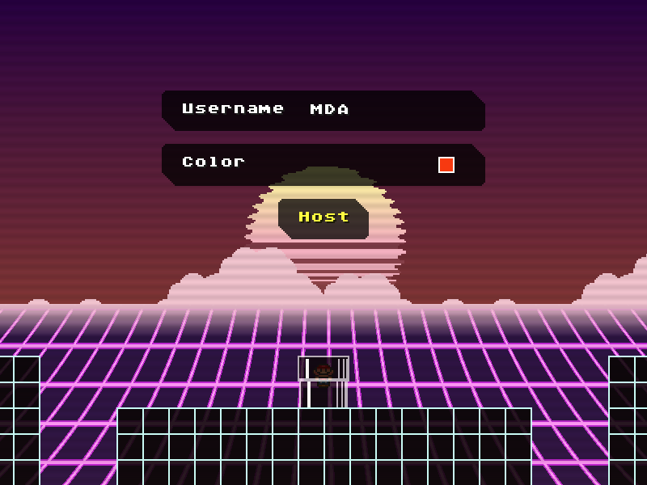
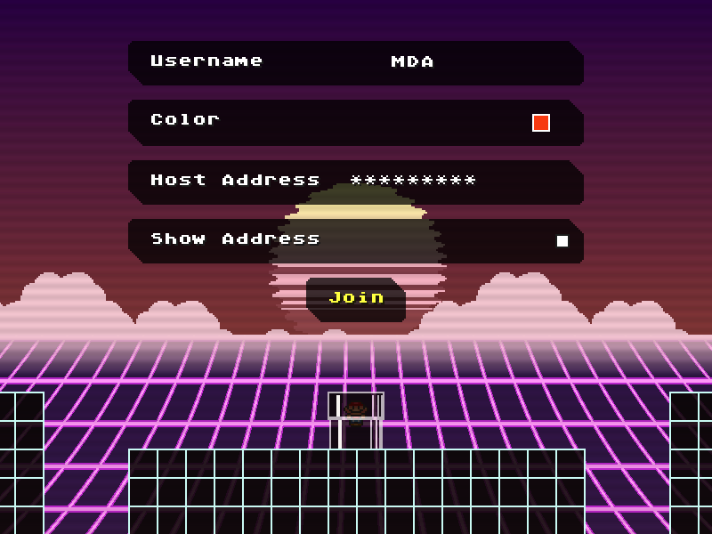

In order to connect with other players over the internet, another program called Radmin VPN is required. This allows computers connected over the internet to act like a LAN network.
Once installed, you can either make a network for you and your friends, or join an existing network. Note that this exposes your IP address to everyone else in the network, so only join a network if you trust the owner!
By default, SMBX2 does not allow any internet access for security reasons. Of course, you'll need to enable this in order to play online.
Find where you installed SMBX2, and navigate to the "data/scripts/base/engine/main.lua" file. Open it in any text editor (even Notepad will do), and scroll to the very bottom. On a new line, add the following text:
customPackage.loaded["socket.core"] = require("socket.core")
After opening the game (or after hitting the red block on the right side of the hub), you will get the option to select "Online". From there, you can follow the steps below to host or join an existing game.
The host should be the person with the best connection to everyone else, as all traffic has to go through them.
Also, you can open the in-game chat by pressing the enter key.

After pressing the "Host a Game" button, enter a name (you can type with the keyboard, and then press enter to confirm) and pick a color that you like (which will be used for representing you).
Press host, and everyone else should be able to join!

Much like hosting a room, you will be asked to enter a username and pick a colour. You will also have to enter the host's IP address, which you can copy from Radmin VPN by right clicking the host and pressing Ctrl+V to paste it in-game.
At this point, you should be ready to play! But below are some issues that you could run into.
You should make sure that you and the host both have Radmin VPN open and that the IP address is correct. You may also need to add a firewall exception. Bear in mind that you can only join while the host is in the hub, and not mid-game.
This is an known but rare issue, where some types of messages cannot be received or sent properly. However, so long as you can still see chat messages and whatnot, the game should still be functional and the issue should resolve itself as soon as you start a game.